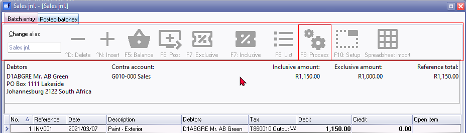
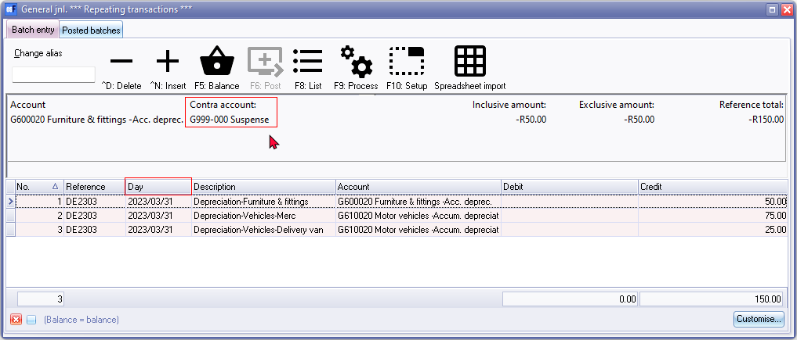
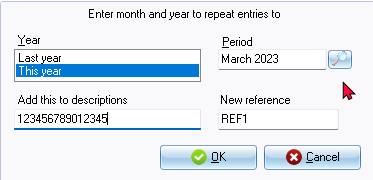
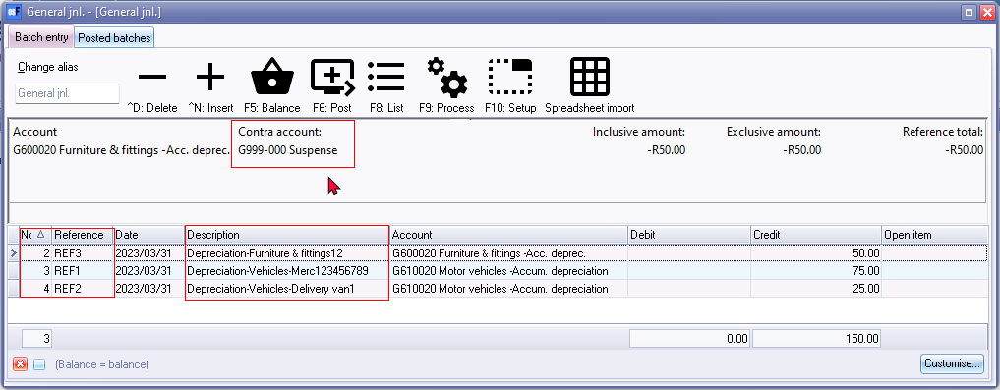
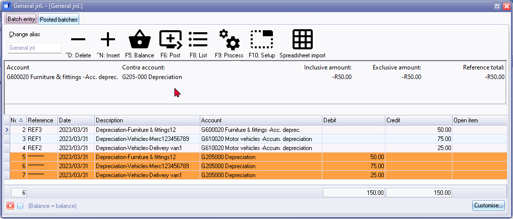
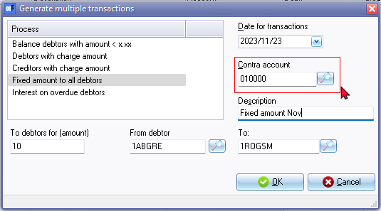
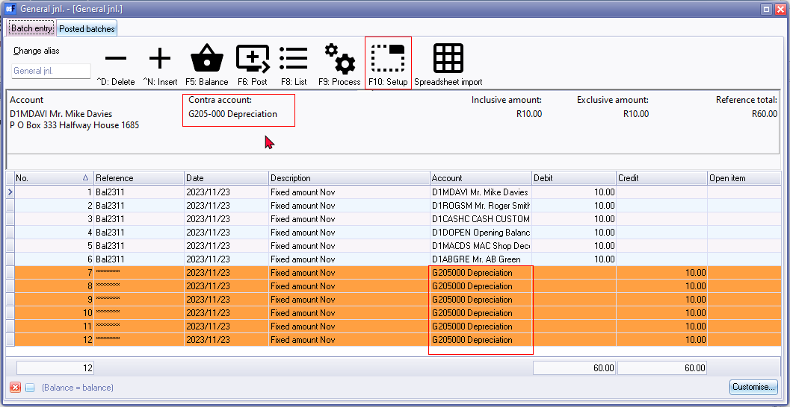
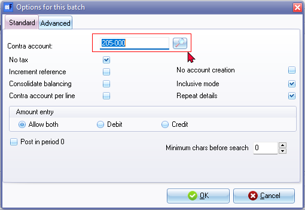

Known issues - Batches
Inactive Batch processing icons on Batch entry screens - Processes
Should the processing icons on the "Batch entry" screen is inactive during this process, you may need to close and reopen the batch.
This may occur after specific processes is performed in the Batch entry screen.

This may occur in the following options:
- F9:Process - Import a posted batch - This option allows you to import the transactions from a posted batch in the same Set of Books.
- F9:Process - Delimited file import - Select and open a valid comma separated value file format to import the transactions in a an unposted batch. This feature will import batch transactions exported using the Write delimited file option.
- F9:Process - Reverse batch (D<-->C) - If transactions were entered incorrectly in the debit column in stead of entering the transactions in the credit column, and vice versa, you may transfer (switch) the transaction amounts as entered into the credit columns to the debit columns and vice versa for any unposted batch.
Repeating Transactions
Clear / Reset a Set of Books - Repeating transactions not cleared
Clear / Reset a Set of Books - (Setup → Global processes → Clear / Reset) clears all batches but not the Repeating transactions entered in Edit → Repeating transactions on the Default ribbon.
Need to manually Erase (Delete) the batch.
Edit → Repeating transactions (Default ribbon)
F10:Setup select the contra account - Does not display when click OK - Only after balancing the batch, the contra account is updated.
Date column displays Day instead of Date

F9:Process - Repeating transactions
On the Batch entry screen, select the batch type for which Repeating transactions have been entered or processed on the Edit → Repeating transactions menu (Default ribbon).
On the F9:Process icon, select Repeating transactions option and click OK.
If no repeating transactions exists for the selected batch, nothing will happen.
Maybe a error or confirmation message, similar to the following, could be displayed:
No transactions to import!

If no repeating transactions exists for the selected batch, nothing will happen.
Maybe a error or confirmation message, similar to the following could be displayed:
No transactions to import!
The options is as follows:
- Year -
- Last year - If this option is selected, only the previous financial year's periods will be listed.
- This year - If this option is selected, the previous financial year's periods and the current financial year's periods will be listed.
- Add this to descriptions - NOTE that the descriptions entered in this field, will be added after the existing descriptions in the "Description" column. The "Description" column supports up to 35 characters. The for existing descriptions entered in this field may not be displayed in the Batch entry screen after import.
- New reference - NOTE that the new reference entered in this field, will replace the existing descriptions in the "Reference" column on the Repeating batch.

If the "Increment reference" option on the F10:Setup (Options for this batch) is selected, the reference number will be increased (e.g. "REF1" as entered). For example "REF2" and "REF3".
Once imported into a normal batch the line No. starts with 2 instead of 1 (as in other import options on Batch entry screens.
Contra account - may not be correct after Repeating entries is processed (imported) into a normal Batch entry screen.
You may need to reselect the correct contra account in F10:Setup (Options for this batch) and F5:Balance the batch.

Generate Multiple transactions - Select Contra account
All batches (except Payments and Receipts batches)
Replicated in the following options:
- F9:Process - Generate multiple transactions - Balance debtors with amount < x.xx - (e.g. Write-off bad debts - Uneconomical to recover)
- F9:Process - Generate multiple transactions - Fixed amount to all debtors
- F9:Process - Generate multiple transactions - Debtors with charge amount
- F9:Process - Generate multiple transactions - Creditors with charge amount
- F9:Process - Generate multiple transactions - Interest on overdue debtors
Need to select the contra account on F10:Setup.
For example, "Fixed amount to all debtors" option if the Contra account is selected as "Sales" account.

After processing the generated transactions, into the batch, the contra account is displayed on the batch as "Sales".

When the batch is balanced, the contra account, changes back to the contra account, as selected in the previous batch.

If balancing transactions is generated, when balancing the batch, delete these balancing transactions and go to F10:Setup and select the contra account for the Generate multiple transactions.

After the contra account is selected on the F10:Setup (Options for this batch) screen, rebalance the batch to the correct contra account.